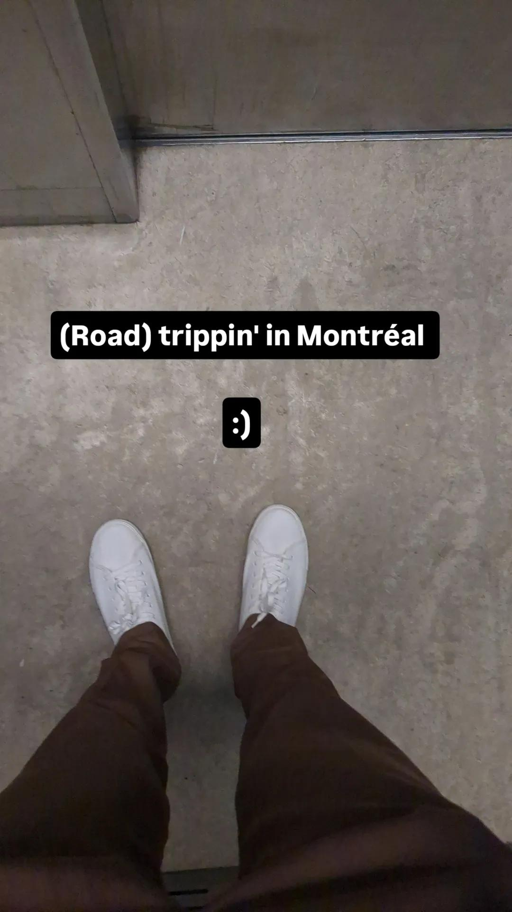
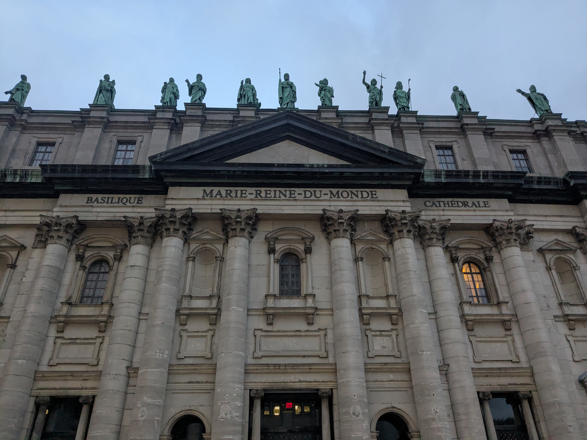

Visiting Montréal
The conference
Attending ICOSAHOM was a great decision. However, getting there by bike was not. I hadn’t brought shoes with me so after showing up on Monday morning to the plenary session in (still damp) cycling shoes I excused myself to buy some new kicks at the nearest department store as soon as they opened.

I was quite pleased with the purchase and did my best to walk with confidence, but I could still only manage to shuffle because my formerly “good” knee was protesting with pain from all of the riding the days before. And more vividly, I felt an astonishing hunger that would make me leave the conference and walk into town for a full meal every hour or two. In that first day, I tried everything from Montréal bagels (for breakfast and lunch) to convenience store nigiri to chicken sandwiches, charcuterie and shoyu ramen. On top of all of the food, I was having trouble staying awake during talks so I topped off my feasting with coffee and pastries during each of the conference’s three coffee breaks and by the end of the day I was feeling delirious.
Despite the numerous parasympathetic signals my body was receiving, I was also “locked in” and participating at the conference. I was working during talks to try and to wrap up my slides, and networking after them while having discussions of ideas with collaborators and friends. In the evening, I finally bid farewell to my colleagues and sat down in a quiet basement in a corner of McGill’s campus to focus on finishing my presentation for the following day. I hadn’t quite finished all of the calculations or slides for the talk, titled “High-Order Methods for Brillouin Zone Integration of Green’s Functions and Their Van Hove Singularities”, but at this point of grad school I was used to turning on my warp drive to assemble months of work into a neat presentation. I let some calculations run while I focused on the outline of the talk and introducing the problems and motivations of our methods in a digestible format on slides. I did as much as I could before returning to my student dorm and collapsing.
I woke up quite early for the day of my presentation because of a restless night in my very warm dorm lacking air conditioning and good ventilation. Luckily, I only had to present in the afternoon so I started feeding my surprisingly hungry body with savory pastries and went back to the conference. While listening to talks on boundary integral equation methods for wave equations and computational methods in quantum mechanics, I was polishing the figures for the results I had computed the night before and trying to simplify some rather dense descriptions of the algorithms I would later present. When it was finally my turn, I began my talk with a sincere apology for my exhaustion and advised that the audience ask clarifying questions if they found any of my explanations confusing or incomplete. It all went rather smoothly, except for a few long pauses when my train of thought would grind to a halt before suddenly coming back.
In the next session, my collaborator, Alex, presented work on our same project and it was really a joy to listen to his creative and inspired explanations of the same topic to a mathematical audience which I had just presented more plainly to a mixed math/physics audience. I also had lost a bet to Alex prior to the conference because I had assumed that our methods for interpolating logarithmic singularities might falter when applied to linearly-dispersive singularities at generic “Dirac” points in electronic bandstructures, sometimes referred to by their older name of “diabolical points”. Instead, Alex had insisted that our method would work because the math never lies and it turned out, after I ran the calculations, that he was right! Given our meeting point in Montréal, I had bet Alex a poutine and later that night at dinner I graciously gave Alex his prize and conceded my defeat. I have never seen a mathematician as excited as I did then.
With the hard work out of the way, I had two more days at the conference and to enjoy Montréal. I continued going to interesting sessions throughout the day and sampling meals and delightful poutines at the numerous business centers of the city before the Wednesday afternoon excursion. My body was still in pain from the bike ride, but it also felt clear that if I didn’t start to move again that I would only recover more slowly. I joined a group of students for a short hike up Mount Royal from the McGill campus, up dozens of stairs until we could finally see the fancy Montréal skyline. A friend, Ewen, and me took a respite from the muggy heat by eating mango popsicles before continuing the hike back down the hill.

Ewen and I met up again for dinner around his hotel in the Quartier Latin. Up until then, I had only wandered within a half-mile radius of McGill’s campus so that I wouldn’t hurt my ailing knee. Reconnecting with Ewen was great – we had first met in Lausanne at another workshop and I really enjoyed his witty remarks and positive attitude on life. We found a good pub at Saint Bock where we filled up on delicious fish ’n chips and then tried a full flight of savory Quebec beers. I was having a great time enjoying myself and finally unwound enough to forget some of the discomforts I had endured in my travels.

My fourth and final day at the conference was spent at Oscar Bruno’s minisymposium where I got to hear about the latest technology in boundary integral equation solvers and meet the people developing these remarkable methods. If I had any regrets about the conference, it was that I didn’t stay until Friday to listen to Oscar Bruno give his talk, because he gives very engaging talks. I also tried setting up my plans for my return trip while I was listening and I decided to draw a route taking me from Montréal to my non-refundable hotel reservation in Randolph, VT 180 miles away. The thought of getting back on my bike the next day seemed far fetched, but I convinced myself that it would be the best way to see parts of Montréal that I hadn’t been to yet and also ride the Formula 1 track called the Circuit de Gilles on my bike. With that in mind, I tried doing my best to eat all I could manage at the coffee hours and I managed to fit in some conversations with the very friendly student organizers. At the end of the day, I attended the conference banquet at a stumptuous hotel in the city center and enjoyed a fantastic meal and conversations with newfound collaborators. I was even awarded a travel scholarship by the organizing committee and would offset the costs of my hotels! I certainly overate, although I didn’t think that was really possible, and walked a bit more around the city in the evening, seeing the city’s basilica, before eventually bidding farewell to Ewen and preparing myself for the trip home by buying some egg salad sandwiches for breakfast the next day.
